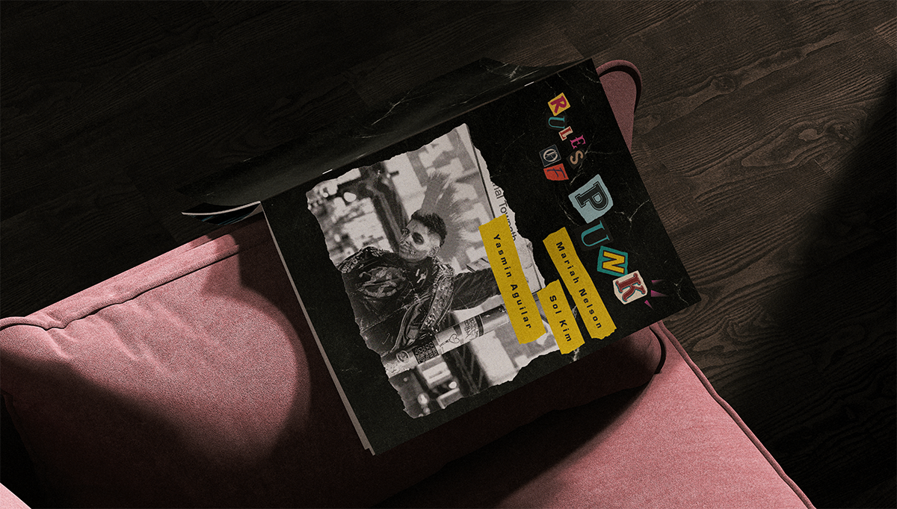
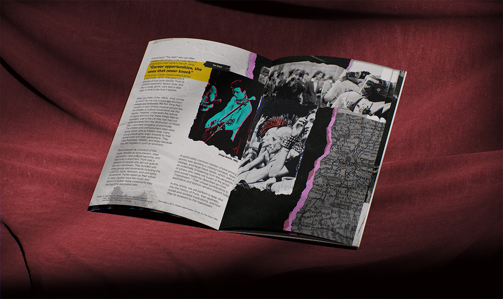

Punk’s Not Dead, It’s in My Design: Crafting "Rules of Punk" Magazine
A publication about punk needs to embody the raw energy of punk culture, not just in its editorial content, but through its visual identity. Additionally, as a collaborative team project, the key design challenge was maintaining a cohesive brand direction across all pages while allowing each designer to express their unique personal style.

The objective was to create a beginner-friendly editorial publication that introduced punk culture through an expressive and authentic visual language. At the same time, the project needed a flexible design direction that could bring together multiple designers' individual styles without losing the identity of the publication.
